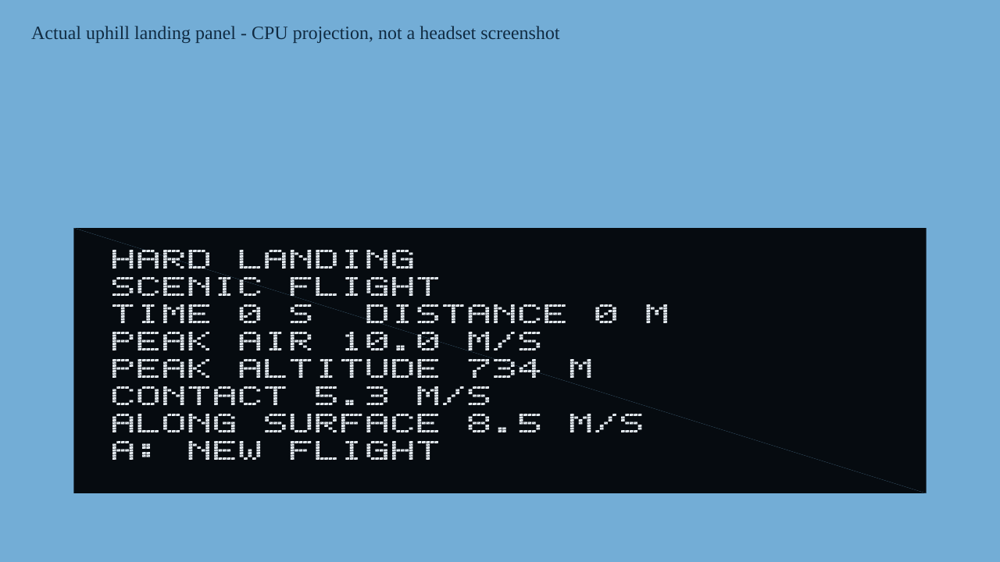

GAME DEVELOPMENT / NATIVE OPENXR
Skybound.
Above the alpine valley.
A paragliding game in development, combining a procedural mountain landscape, a suspended pilot and changing airflow.
This page combines dated exports from the portable C++ implementation. Older plots below retain their original source snapshot; they are not all current-build measurements. The game is an experimental reduced-order model. It is not flight training software.

Three levels launch in their own heading
The October 16 repair fixes a startup inconsistency: all levels previously received westward motion, even when the canopy faced another direction. Each scenic level now starts moving forward relative to the wing’s local air. The same initial ground velocity is applied to canopy and pilot.
| Level | Heading | Forward air motion | Sideways air motion |
|---|---|---|---|
| Eagle’s Ridge | −90° | 10.7 m/s | 0 m/s |
| Sunken Canyon | 45° | 10.7 m/s | 0 m/s |
| Glacier Spires | −63° | 10.7 m/s | 0 m/s |
Download all six launch observations (CSV). Wing-relative downward motion is 1.39 m/s; these are game initial conditions, not measured paraglider performance. Independent checks cover level selection, resets, mode changes and the first 100 milliseconds of flight.
Mode selection restored: click either thumbstick while ready to cycle free flight, released thermals and alpine route. A toggles Cuervo, B selects a level, X toggles ridge cues and Y toggles thermal cues. During flight, thumbstick clicks only recenter the camera. Physical controller acceptance remains outstanding.
Cuervo enters a thermal without jumping
The scripted guide previously jumped about 49.5 metres when it began circling. Its starting radius now matches its existing position, and its reported horizontal velocity follows the actual circle tangent.
| Build | Position change | Reported horizontal speed |
|---|---|---|
| Before repair (1072) | about 49.506 m | 10.5 m/s |
| After repair (1073) | about 0.0122 m | about 12.217 m/s |
Before-repair observations (CSV) · Repaired observations (CSV). Each probe uses uniform 2 m/s uplift at a 1,000-metre starting height, with gusts, ridge lift and thermal columns disabled. The orbit is a prescribed 35-metre circle with an 18-second period; Cuervo is a scripted guide, not a second aircraft solver or learned pilot. Position continuity is checked; instantaneous speed changes can still occur at entry and exit. This does not establish realistic soaring or headset behavior.
Three ways to explore
Scenic free flight: mountain launch, prescribed wind, ridge lift and stationary thermal columns. No time deadline; landing or reaching the valley boundary ends the flight.
Released thermals: a separate 600-second scene with retained, seeded thermal events that fade and drift horizontally. Restart recreates the same schedule. The flight ends at its simulation-time deadline; pause freezes event age.
Alpine route: three ordered rings in calm air, with a 180-second limit and a completion debrief.

Inspect the thermal schedule
Download the generated event schedule (JSON). Seed 20261014, births below 600 seconds, 120-second event lifetimes. The prescribed column model omits buoyant growth, entrainment and weather calibration. Some event lifetimes extend past the scene deadline; the scene ends before those tails complete.
Thermals meet the mountain surface
Scenic gameplay now suppresses thermal flow at and below the triangulated contact surface, with a smooth transition to full strength over ten metres. The same factor applies to the upward, swirling and radial thermal components. Background wind, ridge lift and gusts keep their existing behavior.

Download the complete thermal boundary sweep (CSV). The ten-metre fade is a game boundary choice, not a measured boundary layer or conserved fluid simulation. Thermal locator ribbons omit segments whose vertices enter this band; that vertex filter does not prove exact triangle clipping or represent particle paths.
Sunlight behind the mountains
Thermal source rates now check whether terrain blocks direct sunlight, as well as whether a slope faces the sun. Compare the default high sun with a low western sun and overhead sun below.

Download the complete sunlight comparison (CSV). Visibility samples terrain every 25 metres out to 12 kilometres, beginning one metre above the source. It can miss blockers between samples or beyond that distance. Diffuse light, stored surface heat, moving sun and clouds are omitted; shadow does not prove real thermals immediately stop.
Inspect the brake response
The current model is not yet calibrated. New held-brake and release measurements expose substantial oscillation at medium brake, rather than hiding it in a mean sink value.

Download the complete brake summary (CSV) · Download all 15,626 trace observations (CSV). The numerical screen checks range and drift in airspeed, horizontal speed, sink, alpha, pitch, pitch rate and canopy lift/weight ratio. In this October 14 snapshot, six scenarios have low variation; twenty remain unsettled. A separate October 16 sweep of the newer source produces fifteen low-variation and eleven unsettled scenarios. The historical plot and CSVs above are unchanged. Full brake at 1,500 m is almost vertical with high incidence despite low variation, so that label does not establish normal or safe glide.
These are 60-second descending model trajectories, with density changing as altitude changes. They are not a measured wing polar, fixed-altitude tests or headset captures. Correcting the brake and pitch model still requires trustworthy reference data; these diagnostics reveal the defect and do not repair it.
Ridge lift follows the terrain you see
Ridge airflow now uses the same triangle slope and height as landing contact, including the joins between fine and distant terrain. The earlier analytic slope could differ from those visible triangles. Ridge markers now use contact height and actual attenuated lift at their endpoints.

Download the ridge comparison (CSV). Wind labels describe travel toward positive or negative X/Z, not meteorological wind origins. This aligns the model’s terrain geometry; the positive-only ridge law and 220-metre decay remain illustrative. Lee sink, rotors and a fluid boundary solution are still absent. Triangle slopes can jump at edges. Marker ribbons are locators, not integrated streamlines or exact terrain clipping.
Landing on a hillside
Landing outcomes now use the actual contact triangle. The former rule could label an uphill collision gentle because it checked only vertical sink and horizontal speed. The repaired rule checks incoming speed perpendicular to the surface and speed along it.

Download all 60 contact probes (CSV). Thirty-four probes contact within the 50-millisecond window; eight change outcome under the slope-relative rule. Non-contact rows have empty impact fields. The game thresholds remain 2.5 m/s incoming contact speed and 12 m/s along-surface speed. They do not establish a safe real-world landing. Impact forces, sliding, obstacles and canopy-ground interaction remain unmodeled; collision detection still uses a pilot point after each solver substep.
What has been verified
Independent contact tests reproduce the uphill defect and cover actual hill and seam normals, speed decomposition, threshold boundaries, retained evidence, reset, first terminal tick and landing-panel bounds. Independent ridge tests derive slopes from triangle vertices and check seams, wind direction, contact clearance, layer decay and marker endpoints. All 5,436 diagnostic rows are checked against a separate terrain-height oracle; corrupted inputs are refused. Independent thermal boundary checks cover all three flow components, the contact surface and terrain seams, released-event drift, mode selection, restarts and ribbon vertices. Diagnostic checks validate the complete sample grid and reject corrupted data. Sunlight tests cover ridge occlusion, direction scaling, overhead and night sun, invalid inputs and the unchanged default schedule. The portable E2E run also checks the completed calm-air route, output telemetry, scene geometry and native overlay generation.
Current native delivery: the October 16 cache-assisted build recompiles all 43 native objects and freshly links both libraries. Debug APK 1073 includes the launch, mode-selector and guide-entry repairs and passes signature, alignment and packaged-library checks. No headset was connected during this run, so 1073 is not claimed installed or tested. APK 1071 was installed in the earlier October 14 run; that does not establish the currently installed version. The normal Gradle/CMake path previously failed at worker directory cleanup. Rendering, controller handling, comfort, performance and sale readiness remain unverified. This page offers CPU diagnostics only; no APK download or paid release is offered here.
Follow development
Questions or interest in the game can be sent to douglasbotworks@gmail.com. No purchase, pre-order or release date is offered.